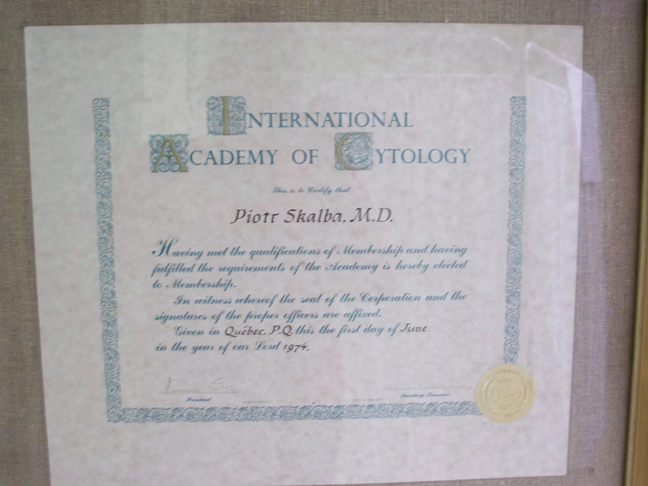

Kontakt
Specjalistyczna Praktyka LekarskaProf. dr hab. n. med. Piotr Skałba
specjalista ginekolog i położnik specjalista endokrynolog
41-800 Zabrze, ul. Sądowa 22
przyjęcia:
poniedziałki, środy od 15:00 do 16:00
rejestracja telefoniczna:
48 32 271-66-81
(pon., śr. 15:00 - 16:00)
lub
(0) 662-01-66-81
(pon.-pt. 13:30-17:00)
Jestem drugim pokoleniem lekarskim. Mój ojciec doc. Henryk Skałba był znanym ginekologiem, przez wiele lat praktykował w Bytomiu. Wiele z jego pacjentek trafiło po Jego śmierci do mojej praktyki. Pracuję zawodowo już 43 lata, ponieważ jestem profesorem wiek emerytalny osiągnę w 70-tym roku życia (tj. w 2013 roku). Od początku mojej kariery zawodowej pracowałem w Śląskim Uniwersytecie Medycznym (przed zmianą nazwy - Śląskiej Akademii Medycznej). W tej Uczelni uzyskałem stopnie naukowe: doktora i doktora habilitowanego nauk medycznych oraz w wieku 42 lat tytuł profesora. Kierowałem jednostkami Uczelni w Zabrzu i Katowicach. Obecnie jestem kierownikiem Katedry i Kliniki Endokrynologii Ginekologicznej profesorem zwyczajnym SUM i tym samym ordynatorem Oddziału Endokrynologii Ginekologicznej w Centralnym Szpitalu Klinicznym im. Prof. Kornela Gibińskiego w Katowicach Ligocie.
Jestem specjalistą ginekologii i położnictwa, a także specjalistą endokrynologii. Jestem autorem licznych prac naukowych, promotorem doktorów i opiekunem doktorów habilitowanych. Jestem autorem książek medycznych i rozdziałów do książek. Dużą poczytność uzyskała moja książka: "Endokrynologia ginekologiczna", która doczekała się już III wydania. Jestem Członkiem Honorowym Polskiego Towarzystwa Ginekologicznego. Szczegóły dot. mojego życiorysu zawodowego można znaleźć na stronach Śląskiego Uniwersytetu Medycznego i w licznych publikacjach biograficznych.
Praktykę prywatną prowadzę już od 40 lat. Mam liczne grono stałych pacjentek z całej Polski. Ostatnio zajmuję się głównie leczeniem zaburzeń endokrynologicznych u kobiet, leczę również inne choroby ginekologiczne i niepłodność małżeńską. Od 10 lat nie prowadzę oddziału położniczego i nie mogę zapewnić pacjentkom ciągłości opieki położniczej, dlatego kobiety ciężarne kieruję do innych położników, z którymi współpracuję. Wykonuję samodzielnie badania cytologiczne, ultrasonograficzne i nadzoruję wykonywanie badań hormonalnych. Wykonuję szczepienia przeciw "rakowi szyjki macicy".
Jestem żonaty, mam troje dzieci i troje wnuków. Moje dzieci to kolejne pokolenie medyków.
Hobby - patrz: www.piotrowe-gniazdo.pl
 |
 |
|||||||
| portret ojca | moja książka | moja książka | moja książka | dyplom |
|  |  |
|
| dyplom | moja Dora |